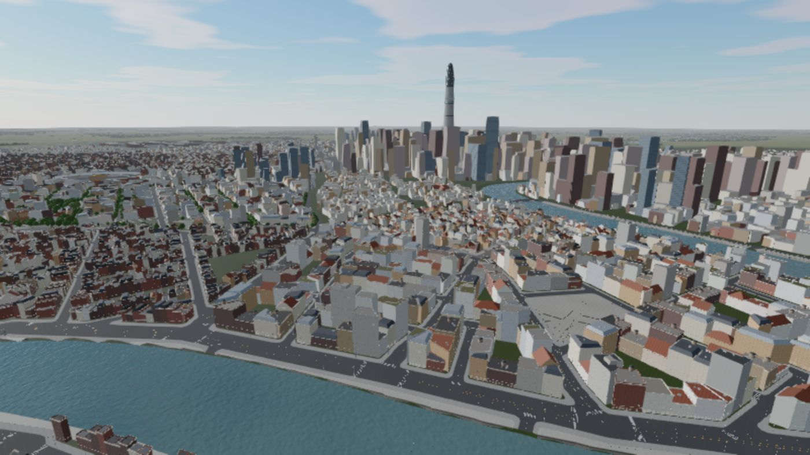
Scale drops you into a city that is built fresh for you: every street, tower, park and sewer pipe is generated from a single number, the seed. The same seed always gives you the same city, a different seed gives you a different one, and the city can be anything from a small town up to a sprawling metropolis with villages, farms and lakes around it. Every building is made of real bricks that can crack, fall and bury the street below.
Into this city you bring a hero. In the normal game you start out as an ordinary person and grow into something much bigger by doing good. Along the way you will meet thousands of people who remember you, half a dozen criminal organisations with leaders of their own, creatures large enough to step over houses, watchers in the sky, perhaps a friend to fight at your side, and a few secrets well below street level.
This manual tells you what is out there and how to get started. It deliberately does not tell you everything: some places are meant to be found, and some stories are meant to be lived.
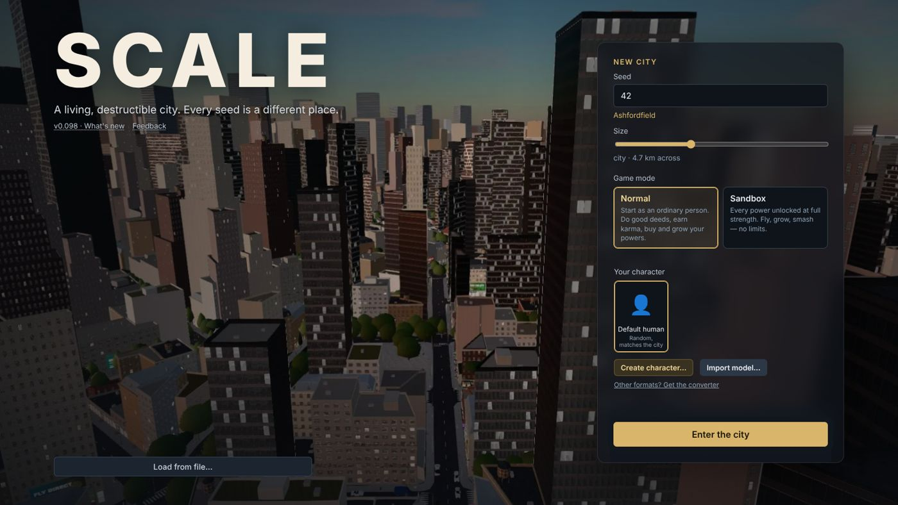
Choose a city size and a seed on the start screen. You can also put them in the address bar, for example ?seed=3&size=1. Each seed shows its own skyline behind the menu. Small cities load quickly and are great for a first look; large ones take longer to build but have more of everything. The first start in a browser also prepares the graphics shaders, which can take a moment.
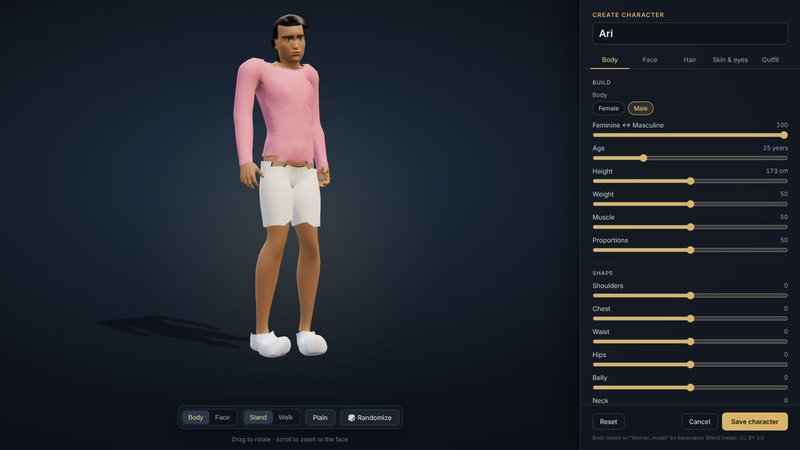
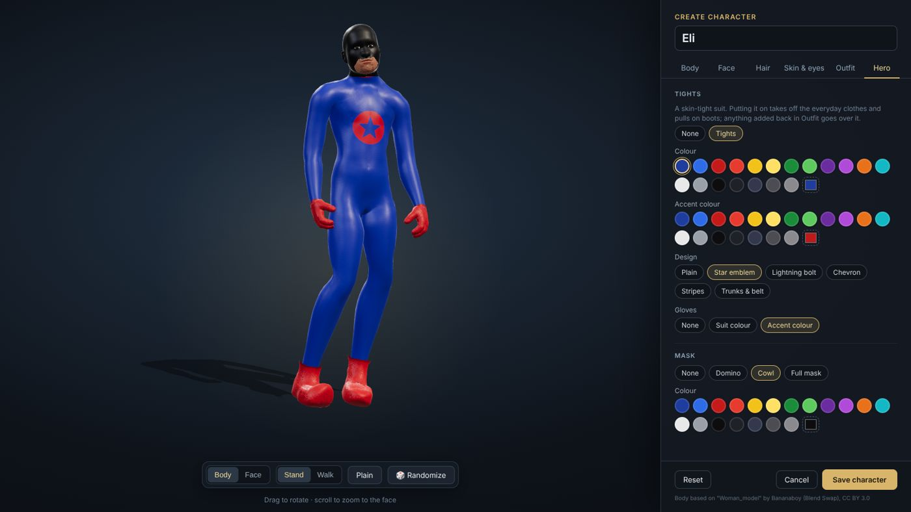
The character creator lets you shape your hero's body and face, choose hair, brows and lips, and dress them from a wide wardrobe of everyday clothes. The Hero tab adds the real thing: skin-tight tights in any colour with an accent colour and a design (plain, star emblem, lightning bolt, chevron, stripes, or trunks with a golden belt), matching gloves and boots, and a mask (domino, cowl or full mask). New characters start plain; the Plain button takes you back to a clean slate at any time. If you have your own 3D model you can import it, and the avatar converter helps bring characters from other tools into the game. Later on, clothes shops in the city have a fitting mirror where you can change your outfit without going back to the menu.
Your hero has three costumes on F1, F2 and F3, and you can switch between them anywhere in the city. At the start all three are the look you made in the creator. The fitting mirror changes only the costume you are wearing, so you can keep street clothes on one key and your hero suit on another. All three are kept in your saves.
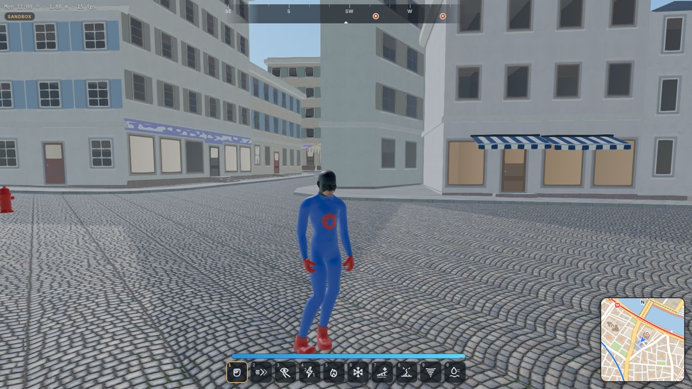
Press H in the game at any time for the help. Its Keys tab lists every action, and every key can be changed there: click a key and press the new one. Each action can have two keys, your choice is kept in the browser, and Reset to defaults brings the original keys back. The default keys:
| Key | Action |
|---|---|
| W A S D | Move |
| Shift | Run, or boost while flying |
| Alt | Walk slowly (hold) |
| R | Autorun at the pace you had when you pressed it (with Shift: fast; in flight: autoflight) |
| Space | Jump; hold for a super jump (hold W too to leap forward) |
| Ctrl / C | Go down while flying |
| F | Toggle flight |
| Num + / Num − | Grow and shrink (size shift); = and - work too |
| 1 … 9, 0 | Use the power in that hotbar slot |
| Tab / Shift+Tab | Next / previous target; on a giant creature, its body parts (weak spots first) |
| Left mouse | Pick a target |
| Right mouse (hold) | Look around |
| Mouse wheel | Camera distance (all the way in: first person, through the hero's eyes) |
| E | Interact: talk, help someone up, pick up, carry, use a mirror or manhole, dig, turn yourself in |
| P | Powers screen |
| M / N | Big map (click it to set a marker the compass points to) / minimap on and off |
| G | Rally the soldiers near you (reputation 40+ with the army) |
| T | Airstrike on your target, a giant creature (reputation 70+) |
| K | Call your sidekick (once you have one) |
| F1 / F2 / F3 | Put on costume 1, 2 or 3 |
| [ / ] | Shift the time of day |
| F8 | Free camera |
| B | Test blast (Sandbox only) |
| H | Help: keys, powers and this manual |
| F4 | Detailed info line (frame rate, position) |
| Shift+F11 | Shader counter (for the curious and for bug reports) |
| Esc | Pause menu: save, load, settings |
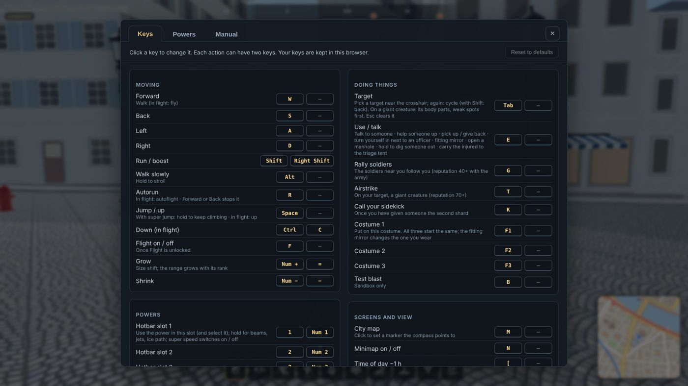
On an iPad or other tablet the game shows touch controls: a movement stick on the left, a look area on the right, and buttons for jump, flight, the hotbar powers and interaction. Pinch changes the camera distance. A More button holds the rest: rallying soldiers, airstrikes, calling your sidekick, the time of day. Changing keys in the help does not affect the touch controls.
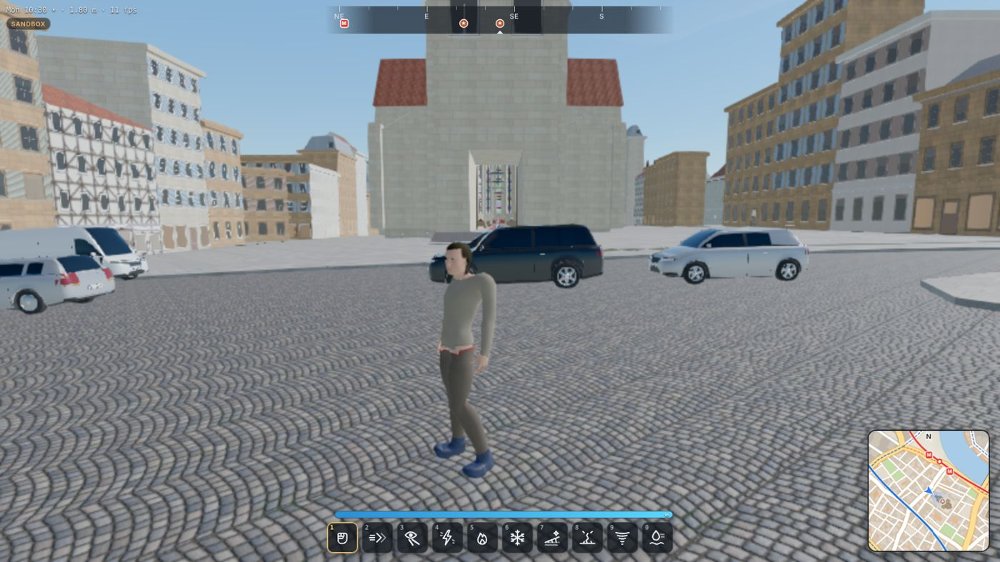
The heads-up display shows your health and energy, your karma and reputation, the hotbar with your powers, and the minimap. Targets you pick get a health tag above their head. When you walk into a new neighbourhood a banner tells you its name and how much crime there is; when the police are after you, wanted stars appear.
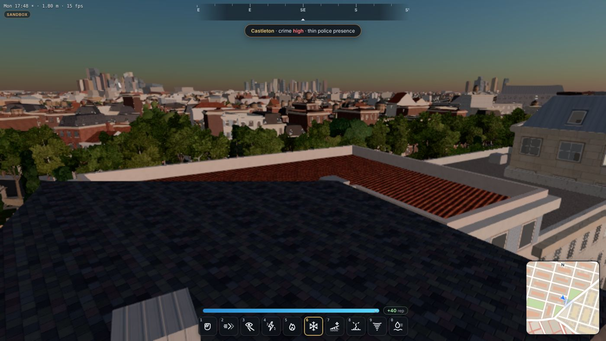
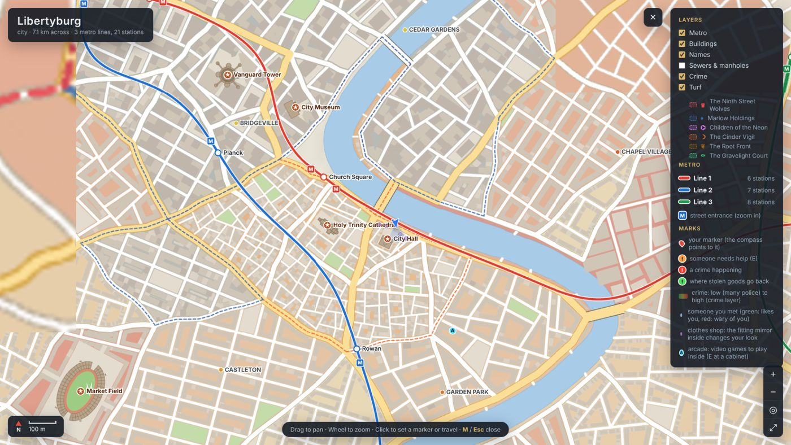
The big map shows streets, parks, water, landmarks and points of interest. Its turf layer colours in who controls which part of the city, and its legend names the organisations. Golden dots mark people who have a favour to ask; other markers show crimes in progress and big events. Click anywhere on the map to set a marker; the compass at the top of the screen then points to it with the distance. The minimap in the corner shows the same marks around you, and the compass shows nearby points of interest: metro entrances, people who need help, crimes, small deeds and power cores.
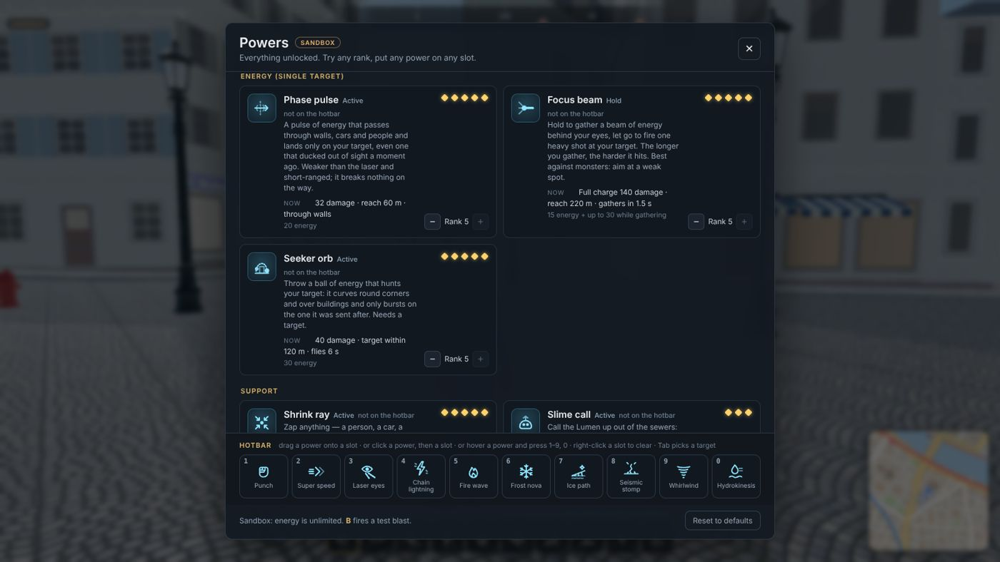
In Normal mode, every good deed earns karma: stopping a thief, rescuing someone from a collapsed house, helping a lost tourist, getting a cat down from a tree. Spend karma on the powers screen to unlock new powers and to make them stronger, up to rank 5, and drag them onto the hotbar. Powers have no cooldowns: each use costs energy, which refills over time, and you can use a power again as soon as you have the energy for it. A hotbar slot darkens while you are short of energy for that power.
| Group | Powers |
|---|---|
| Body | Punch, super strength, size shift (from 10 cm tall to a 100 m giant; being big costs energy) |
| Movement | Super jump, super speed, flight |
| Elemental | Shockwave, laser eyes, fire wave, fireball, frost nova, ice path, chain lightning, seismic stomp, whirlwind, hydrokinesis |
| Energy (single target) | Phase pulse, focus beam, seeker orb |
| Support | Shrink ray, and one power you will have to earn the hard way |
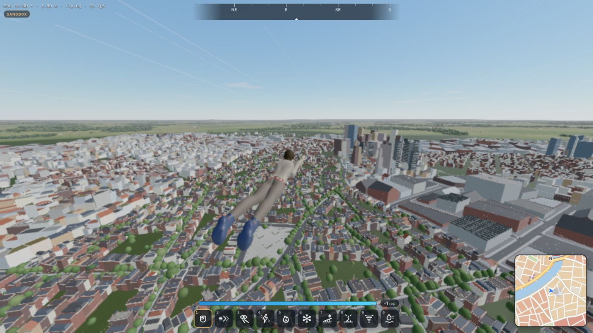
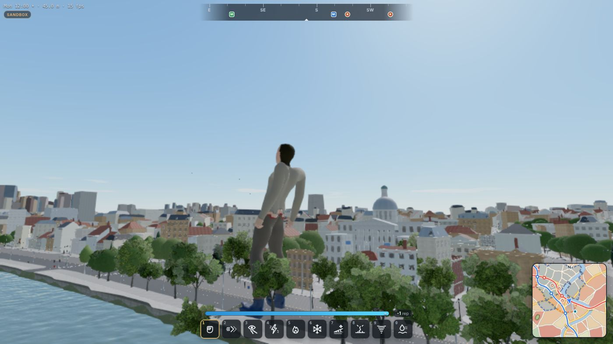
These three hit only the one they are aimed at: no fire, no bystanders, nothing broken on the way.
Most area powers (laser eyes, shockwave, fire wave, fireball, frost nova, chain lightning, seismic stomp, whirlwind and hydrokinesis) can be bought with a friend/foe sense on the powers screen, for the price of that power's first rank. With it, the power only harms criminals still in the fight, monsters and rogue machines; bystanders, police, cars and buildings are left alone. A giant loses the sense: above normal size every power hits everything again. In the Sandbox it is a free switch.
Super jump is a travel power in its own right: hold W while you leap and the jump carries you forward, faster the higher you climb. The leap picks up speed as it flies; bounding from landing to landing is nearly as quick as flying, and a top-rank leap clears about a kilometre. At normal size, landing next to someone only startles them. Super speed hops over people and cars, and flight costs nothing, although energy does not refill in the air.
The shrink ray works on everything, monsters included. Small things shrink by a large factor; big things lose a few metres at most, but anything shrunk hits noticeably softer.
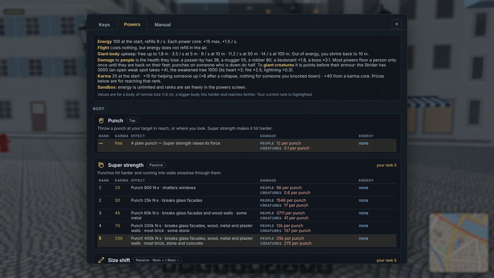
For the exact numbers, open the help (H) and its Powers tab. It lists every power with its effect, damage, energy and karma price per rank, highlights your current rank, and explains the rules for energy, flight, giant size and karma.
Every city has a town hall and a stadium, and between one and four other attractions: a TV tower, a cathedral, a Ferris wheel, monuments, a museum, a lighthouse, a castle ruin, glasshouses, an airport. Each one gets its own name. Paved approach paths lead up to them from the street.
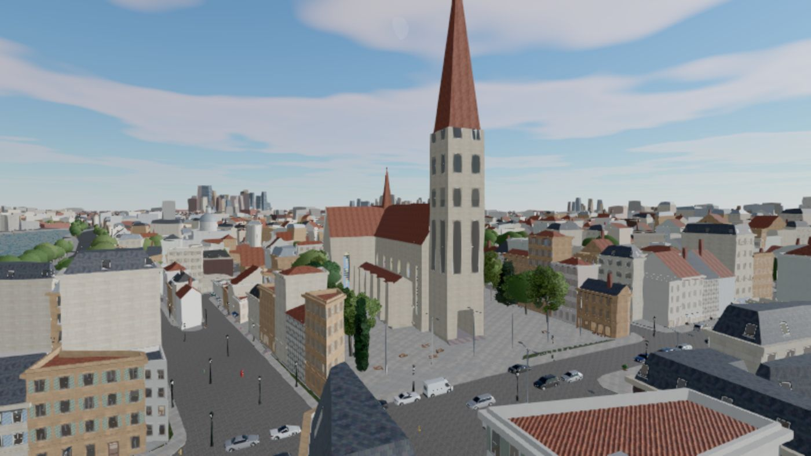
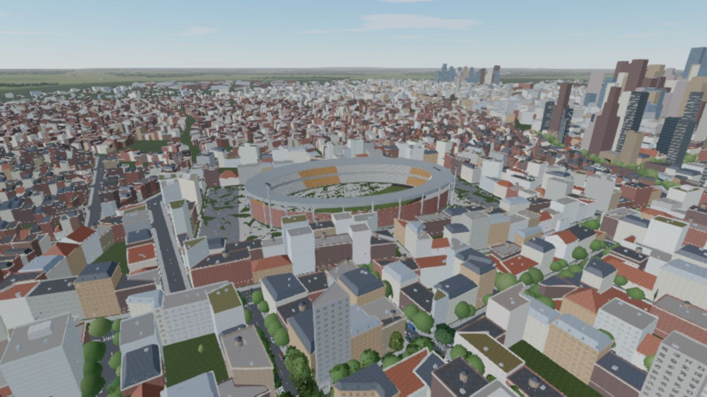
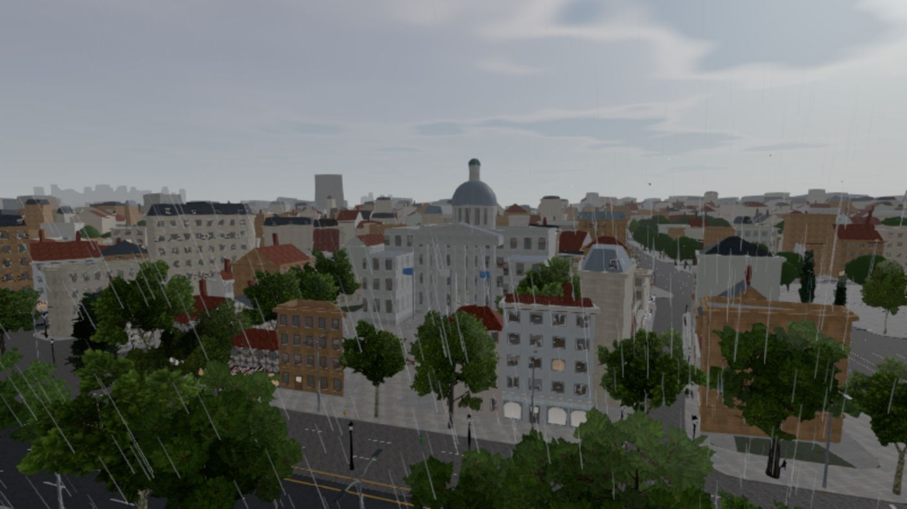
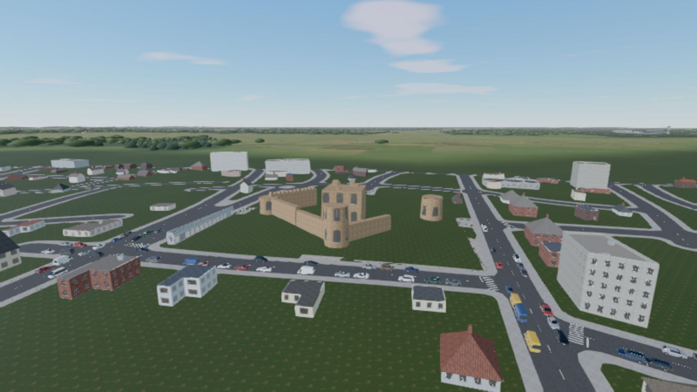
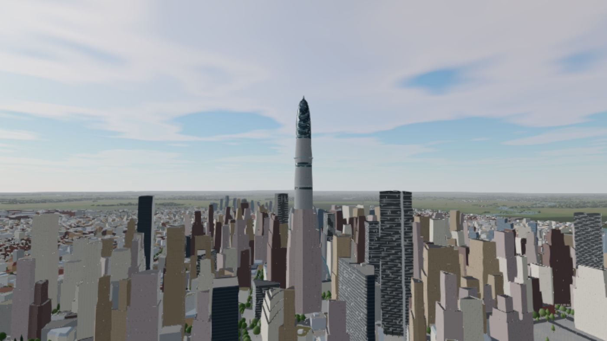
Bigger cities may have a marvel, a piece of impossible architecture that dominates the skyline. There are eight families of them, from a twisting tower and a floating skyship to a halo, a cluster of orbs and the starship above. Marvels are not just scenery: they are built from bricks like everything else, and some of them can be entered.
The city runs on a clock. The sun rises and sets, the moon comes out, street lamps light up, and the people's routines follow the hour: commuters in the morning, shoppers at noon, night owls after dark. The weather changes too, from clear skies to clouds, rain, storms and fog. Use [ and ] to move the clock if you want to see the city at a different time.
Around the city lies countryside: villages, farms, fields and lakes. It is quieter out there, but not empty.
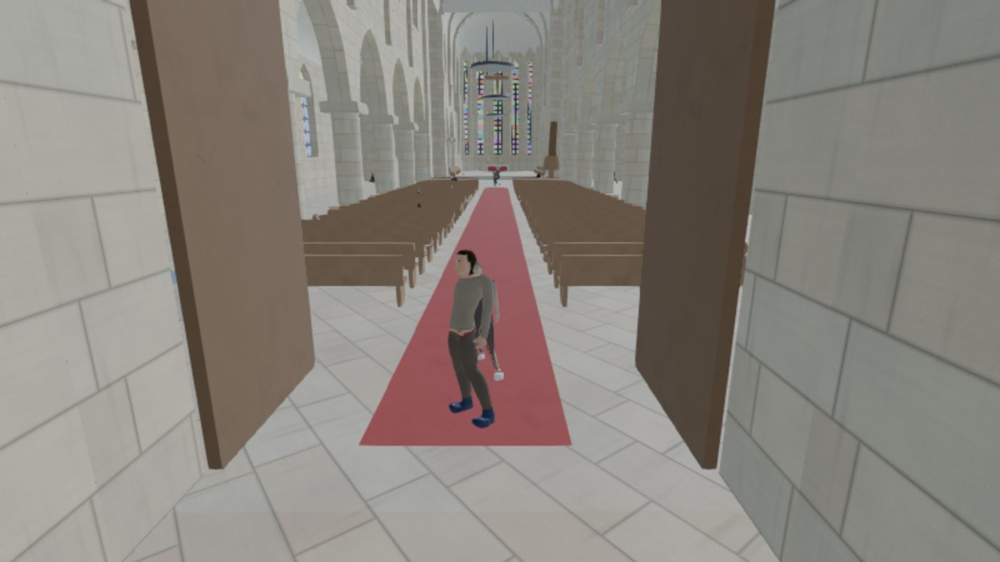
The cathedral and the town hall are fully enterable, with stairs, lifts and seats. They fill up at their own times: services in the morning and evening, weddings, and council sessions in the town hall's chamber. Visit at different hours and you will find different people there.
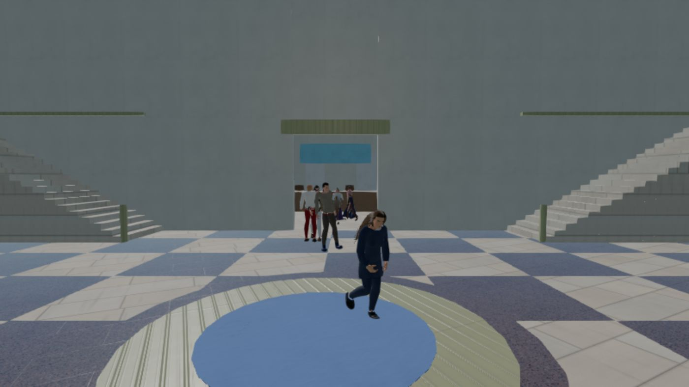
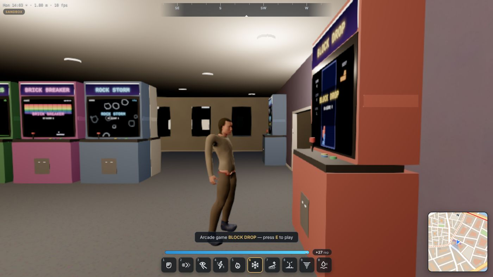
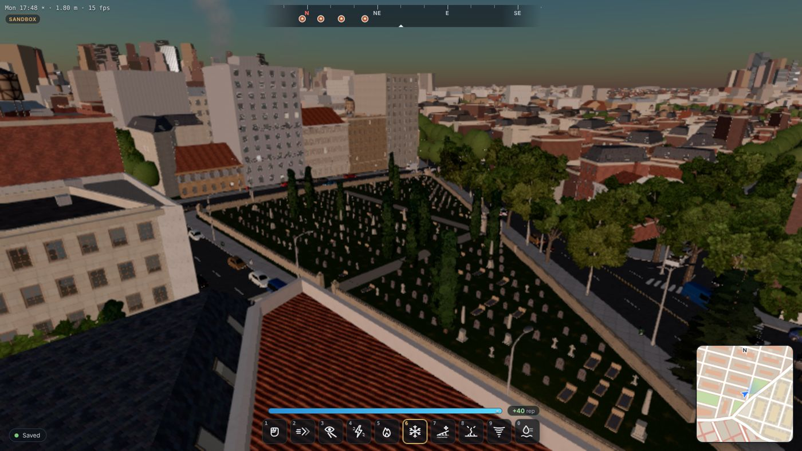
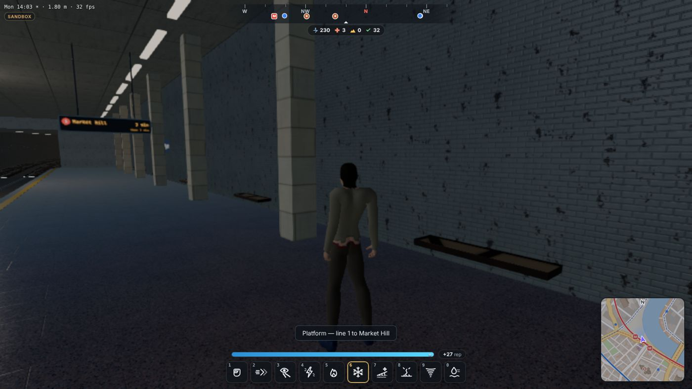
Bigger cities have a metro. Take the stairs down at a station entrance, wait on the platform with the commuters, and ride the train across town.
Lift a manhole cover with E and climb down; every ladder down there leads back up the same way. The sewers run under the streets: tunnels with rats, pump and machine halls, twisting side rooms, and here and there a hideout that someone has made their own. Hideouts are guarded, and what is stashed in them matters to the organisation that owns it.
The street and the tunnels are separate worlds. A fight below does not shake the street, nothing up top can hurt you down there, and the police on the pavement cannot see what you do underground. Hiding below can be a way to lose a wanted level.
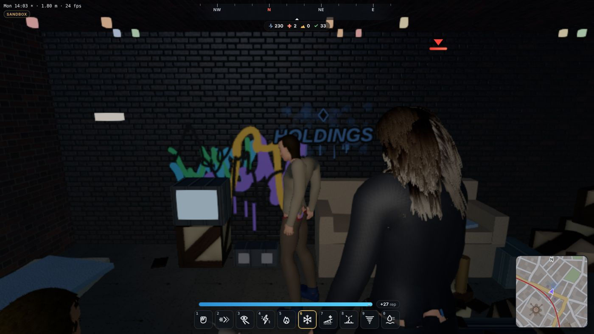
The sewers are not the bottom. Persistent explorers who dig or find the right way down will discover that the city has neighbours nobody up top knows about, and that they have troubles of their own. Keep an eye out for strange glowing signs in the sewers. That is all this manual will say.
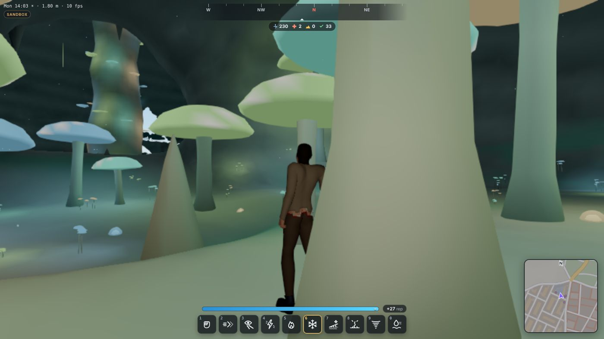
Everyone you meet is a person: they have a name, a home, a job and a personality. They walk to work, sit on benches, go shopping and go to bed. They notice what you do, they remember you, and they talk about you. Some are brave, some are timid, some are grumpy, some will ask you for an autograph.
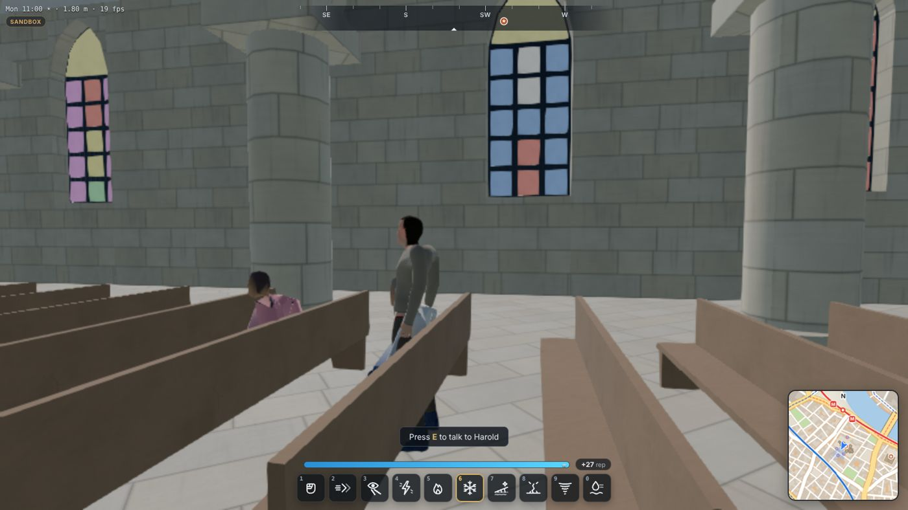
Press E near someone to start a conversation, and answer with the number keys. People will chat about the weather, the neighbourhood, the news and what they think of you. Many have needs of their own, and some will ask you a favour. People with a favour to ask show up as golden dots on the map. Helping them earns karma, and they will not forget it. People also know each other: help someone and their friends may hear about it.
The streets are full of characters: buskers and mimes, jugglers and dancers, a living statue, a doomsayer, a man in a chicken suit, a conspiracy theorist, the pigeon lady, joggers, a lost tourist who needs directions, and on certain nights a sleepwalker. There are small good deeds everywhere: a cat stuck up a tree, a runaway dog, a lost wallet to return.
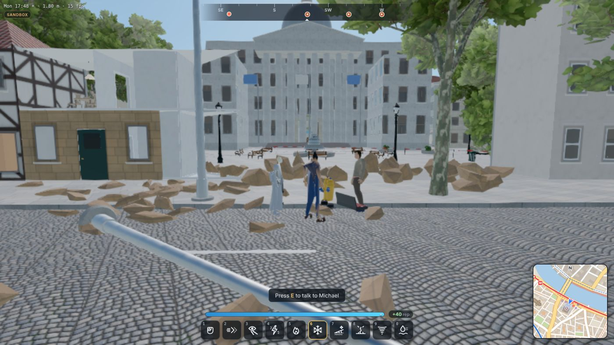
The city has a pulse. Every neighbourhood has a name and a crime level, and the police patrol where they are needed. What you do changes it: clean up a rough district and it gets safer; neglect it and it gets worse. News travels: passers-by gossip about what just happened, and billboards and screens report the big events.
Crime happens all the time, all over the city. You do not have to look for it; listen for shouts and watch the map.
Stopping a crime earns karma and reputation. Knocking criminals down is fine; flattening bystanders, cars and buildings is not. If you do get the police on your back, you can stand next to an officer and press E to turn yourself in, or slip underground where they cannot follow your trail. Every harm is booked to whoever really did it: what the police, the army or a monster breaks is not counted against you.
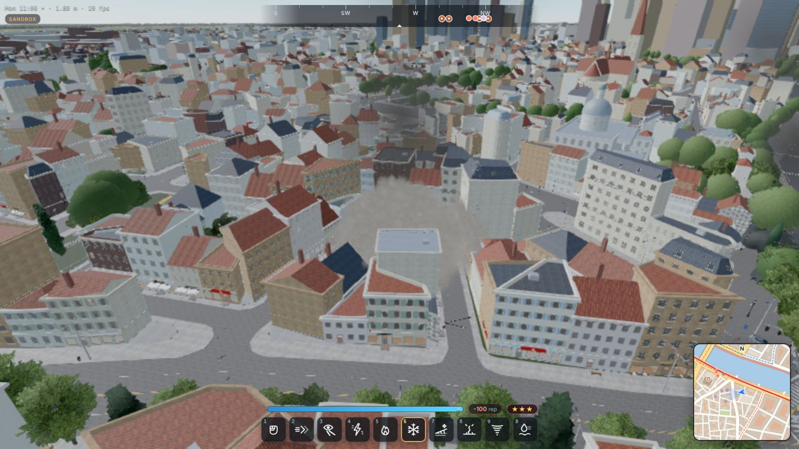
Every city is carved up between six criminal organisations. Their names, colours and leaders are different in every city, but their nature is always the same. Each one holds turf (visible on the map), runs operations in its own style, keeps a stash somewhere, has lieutenants who lead the dangerous jobs, and answers to a single boss.
| Organisation | What to expect |
|---|---|
| The street gang | Loud, numerous and territorial. Tagging walls, shaking down shops, and turf wars with the neighbours. Their lieutenant is a Brute; their boss is the Kingpin. |
| The syndicate | Suits, money and protection rackets, with a respectable front. Their lieutenant is an Enforcer; their boss is the Chairman, and the Chairman thinks big. |
| The techno-cult | They believe in machines, and machines answer. Expect robots that do not behave as they should. Their lieutenant is a Technomancer; their boss is the Architect. |
| The elemental cult | Robes, chanting circles and fire. Their rituals are not just for show. Their lieutenant is an Invoker; their boss is the High Invoker. |
| The eco-radicals | They want the city given back to nature, and they have friends with four legs and roots. Their lieutenant is a Beast-master; their boss is the Elder. |
| The necromancers | Graveyards, lanterns, processions at dusk. What they raise does not stay down by itself. Their lieutenant is a Bone-caller; their boss is the Grave Lord. |
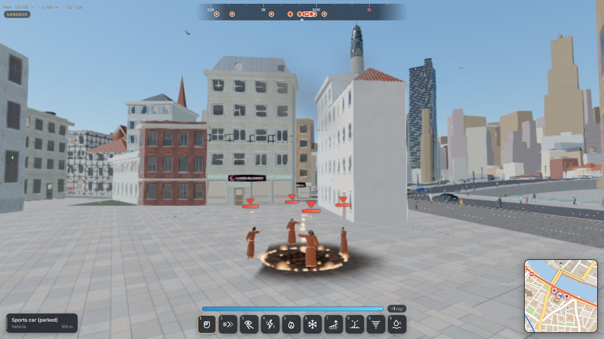
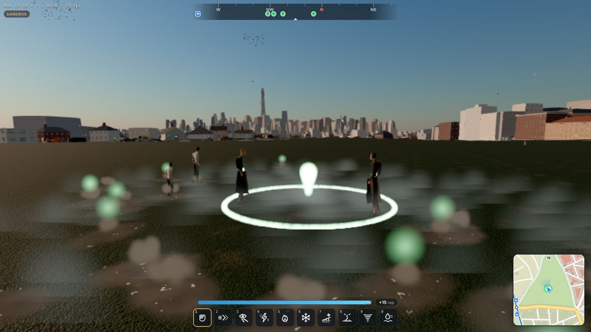
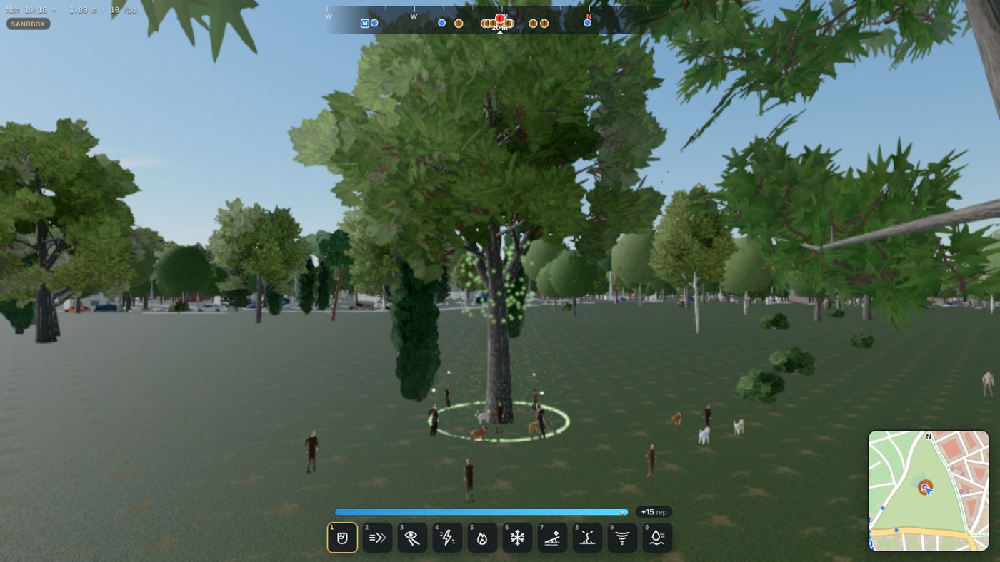
Every organisation keeps score. Beat their people and spoil their plans, and they take notice of you: their notoriety with you rises, and they start sending tougher crews. Push far enough and the boss steps out of the shadows to run one great operation of their own, each one a city-wide event in its organisation's style. Defeat a boss and they go to jail.
Jail does not always hold. Bosses have been known to break out. An organisation only truly falls when its boss is behind bars and its stash has been found and busted. When that happens, its turf opens up, and the other organisations will be happy to move in.
Every so often something happens that the police cannot handle. These are the big threats:
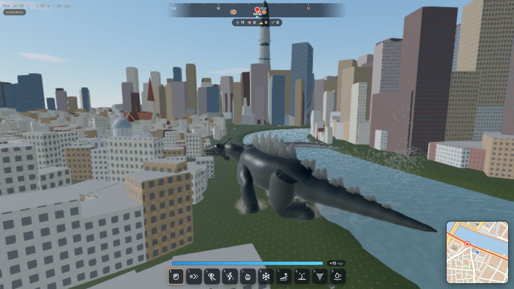
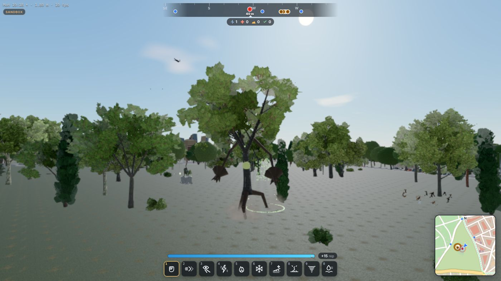
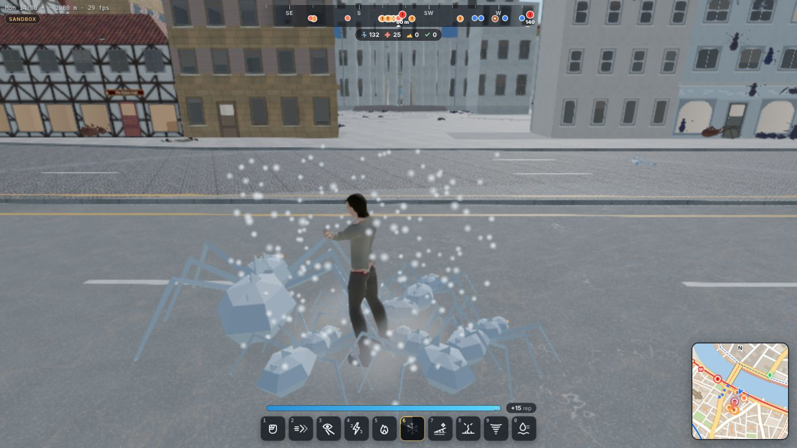
When a big threat appears, the army moves in with soldiers, vehicles and helicopters. You can fight alongside them, or lead them: press G to rally the troops near you (once the army thinks well enough of you), and T to call an airstrike on a giant creature you have targeted (for well-known heroes only). If all else fails, the army has a last resort. You will see the countdown, and you will want to finish the fight before it reaches zero.
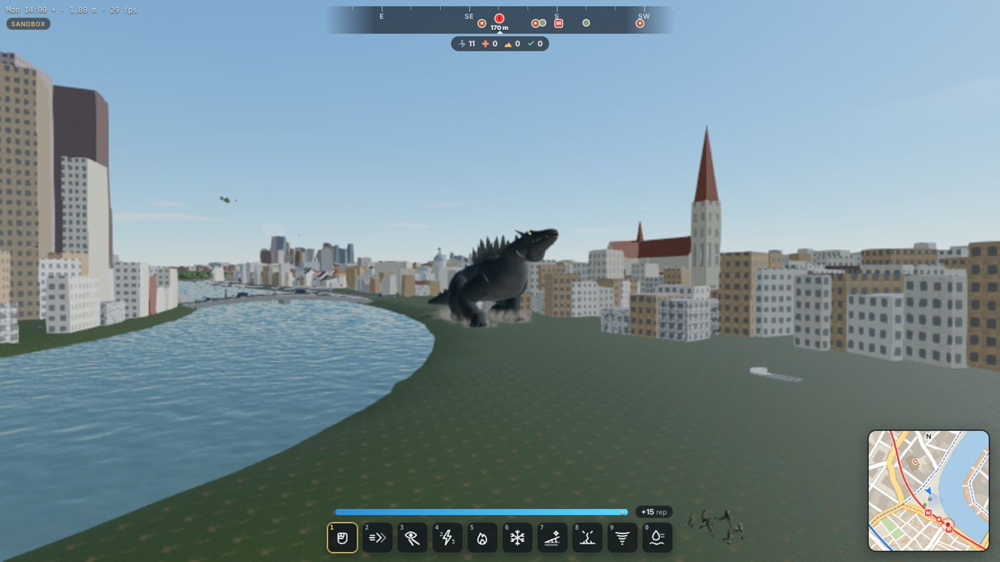
A big fight leaves its mark. People are trapped under rubble and need digging out, a triage tent goes up for the wounded, the city counts its casualties, and memorials appear for those who were lost. The remains of what you fought may stay where they fell for a while.
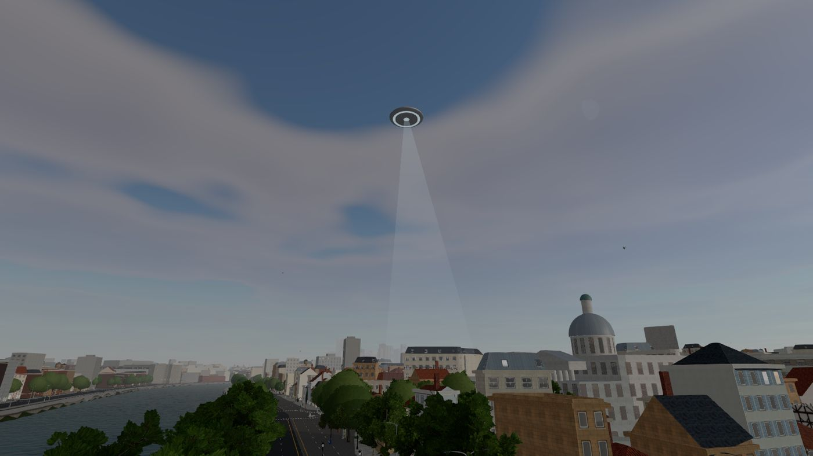
The city is being watched. High above it hangs a station, a pale second moon by day and a dark shape with crawling lights by night, and silver discs cross the sky: usually a handful, some hours none at all, and now and then, for no reason anyone knows, a swarm of a hundred with festive lights. People call the watchers the Nannies.
The discs never meddle. They come down to hang over a street and sweep it with a pale scan cone, gather over a crime or a fight and watch it to the end without lifting a finger, or stare at a landmark for hours. Fly high or grow giant and you may find a cone turned on you. Sometimes a disc sets a tall robot walker down on a square; it stands there, looks around (at you, if you come close), takes a few slow steps and is lifted away again. People gawk, film it, grumble or joke, and the news reports it.
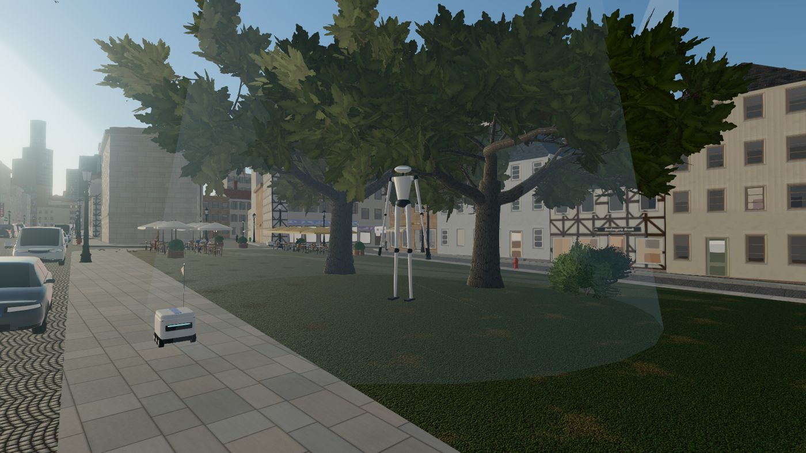
Not every visitor follows the rules. Now and then someone young takes a small, battered saucer out for a joyride low between the houses, where the roofs hide it from the watchers above. Watch for something zipping down a street, glowing glyphs on walls, cars that end up on roofs, and passers-by who end up in fountains. Getting the joyriders caught takes some thought: the Nannies only notice what is out in the open. Handing them over is rewarded, and the Nannies remember who helped.
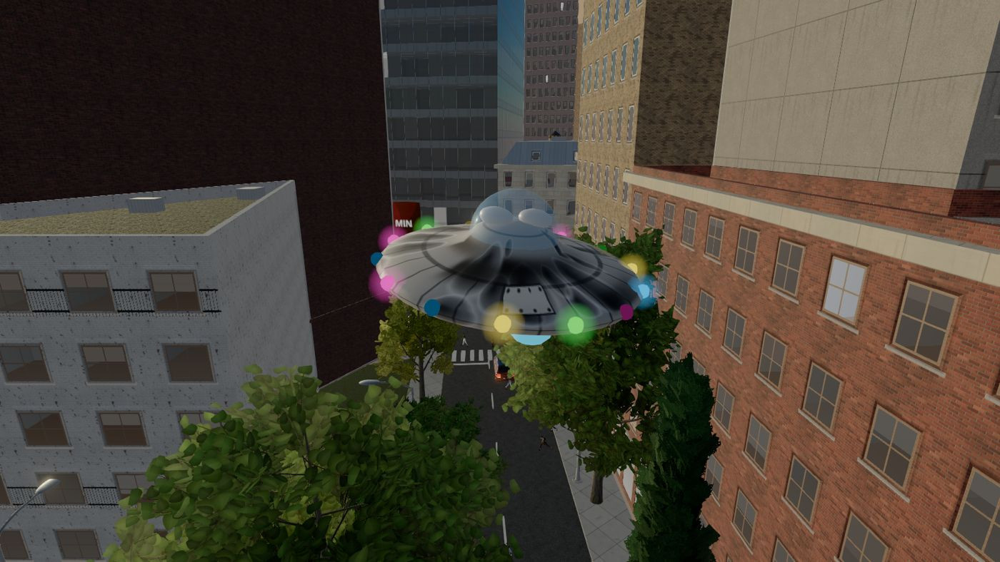
Once the city thinks well of you (or after a short while in the Sandbox), the news reports a strange glowing stone in a park or square. The map marks the area; nearer in, a hum and a glow at the edge of the screen lead you to it, and a pale column of light rises from the stone. Sometimes a gang has got there first. Pick it up and you carry the second shard.
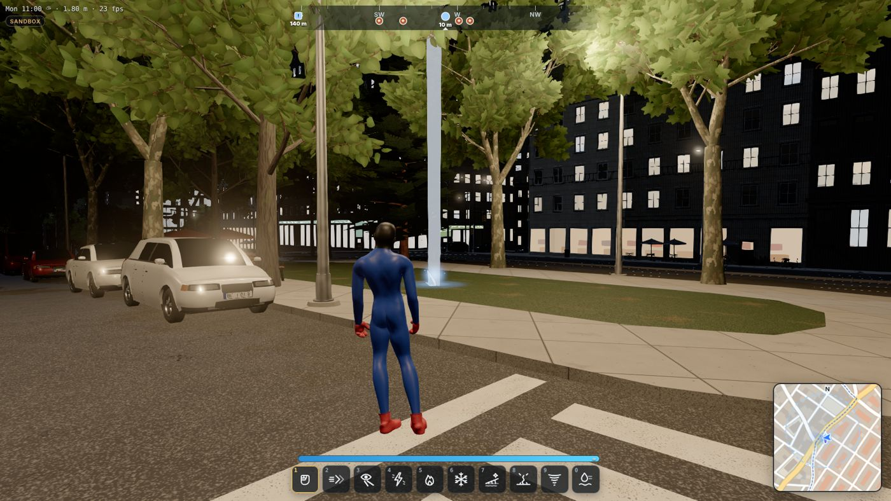
Talk to anyone while you carry it, and you can offer it to them. Most people say yes; children, people at work, and those who dislike you or heroes in general say no, and some want a favour first. The one who takes it awakens and becomes your sidekick, marked gold on the map.
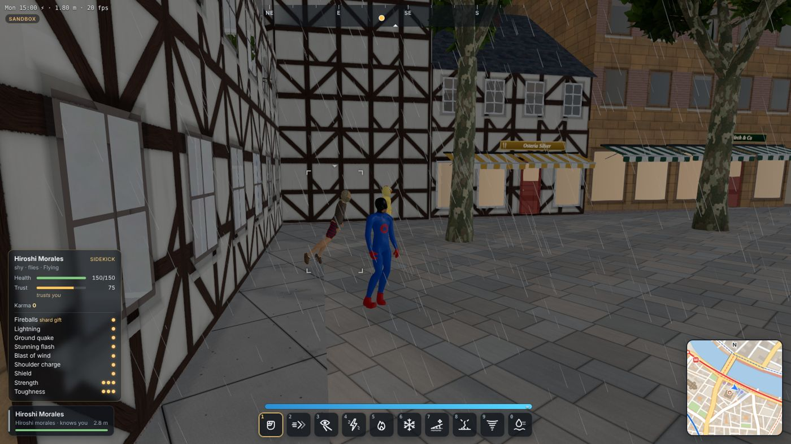
Karma is what you earn; reputation is what the city thinks of you. The two are separate. Saving people, stopping crimes and defeating threats raises your reputation. Hurting bystanders, wrecking cars and bringing buildings down lowers it. Accidents caused by falling rubble or monsters are not counted against you, but collapses you started are. Reputation has no upper limit: past +150 the city calls you a Living legend. The bottom is −100.
| Reputation | What happens |
|---|---|
| High | Fans ask for autographs, press photographers follow you, a TV crew turns up at your fights. Become a true hero and the city may even put up a statue of you. Everything is at full strength from +100 on. |
| Around zero | People do not quite know what to make of you. |
| Low | Protesters with signs, people who keep their distance, and a police force that gets more and more serious. Very low, and the army may come for you. At −70 or worse you are a public menace, and if the police take you down, they take you in for good. |
When you cause harm, wanted stars appear. The more stars, the heavier the response. Turning yourself in with E ends a chase at once.
Heroes get hurt. When your health runs out, what happens next depends on what the city thinks of you.
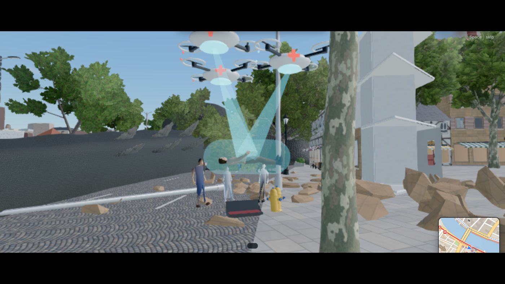
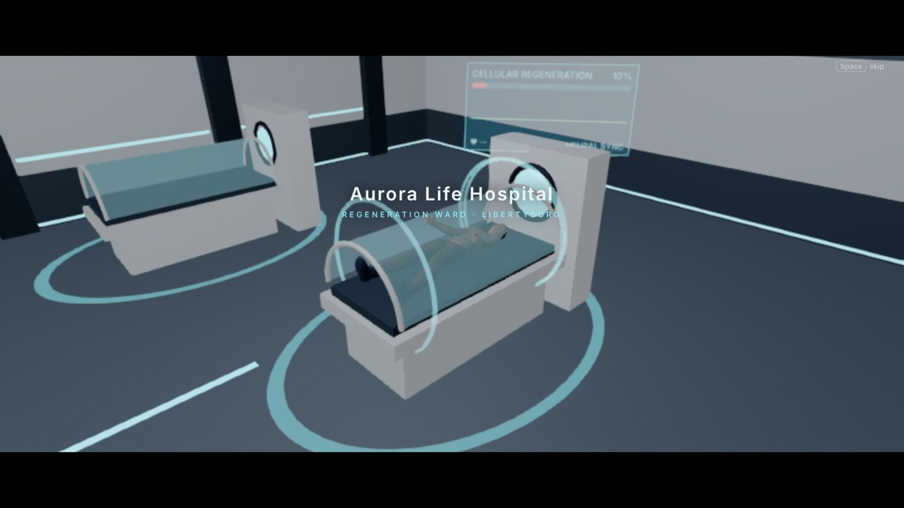
The game saves automatically. In the pause menu (Esc) you can also make named saves, load them, and save to or load from a file on your computer, which is handy for backups or moving to another device. Saves keep your hero, your powers and your progress.
The pause menu (Esc) holds the settings: time speed and time of day, the weather, volume, music and a detailed sound mix, graphics level and render scale, how often street crime happens (off, calm, normal, chaos) and how often the city is hit by big events. Auto graphics adapts to your machine while you play; if the game still runs slowly, a smaller city helps the most.
The game draws with WebGL. A newer WebGPU renderer can be tried by adding &gpu=webgpu to the address; it looks the same and is still being tuned. Shift+F11 shows a small shader counter and F4 a detailed info line, both handy when reporting a problem.
The city sounds alive: traffic, footsteps, chatter, sirens, music, and a soundtrack that follows the mood. Listen; a scream in the distance is often the first sign of trouble.
The help (H) has three tabs: Keys, Powers and this Manual. The manual is also on the start screen and in the pause menu, and can be opened as a PDF. Found a bug or have an idea? The Feedback link next to the version number on the start screen and in the pause menu sends your message straight to the developer.
Have fun, and look after your city.